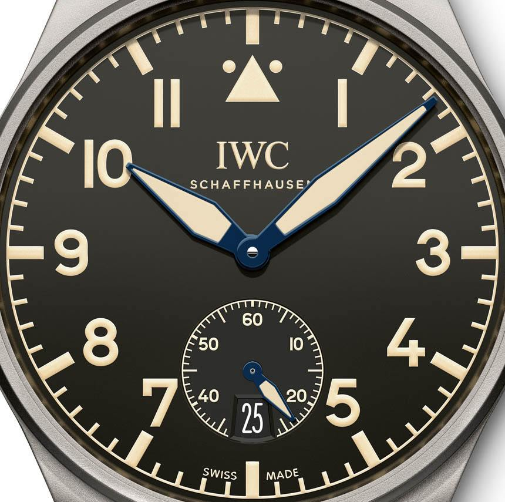
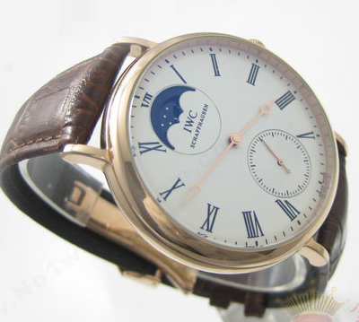
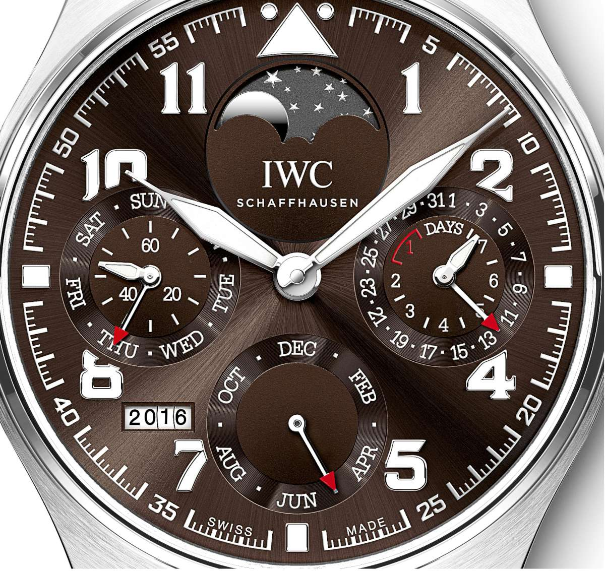
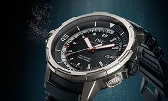
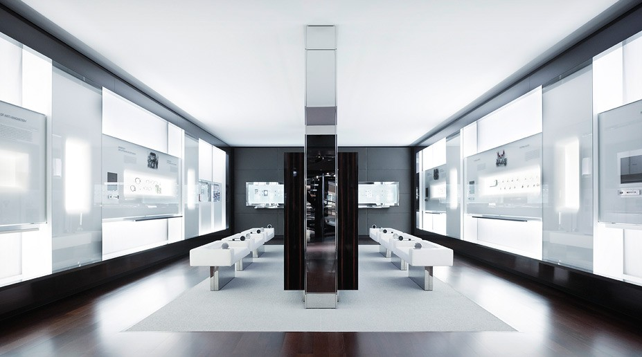

THE PILOT'S WATCH
COLLECTION 2016
COLLECTION
 PORTUGIESER TOURBILLON HAND-WOUND "D.H. CRAIG USA"
Discover now
NEWSLETTER
SIGN-UP TO THE IWC NEWSLETTER
Sign-up now
PHONE SALES SERVICE
CONTACT US TO PURCHASE CALL +1 800 432 9330
Learn more
SOPHISTICATION
FROM THE COLLECTION
The elegant design and moderate height of the case have made the Portuguese Chronograph one of the most sought-after Portuguese models of them all.
INSIDE IWC
The headquarters of IWC Schaffhausen today stand on a site that used to be the orchard belonging to the All Saints monastery in Schaffhausen.
EXPERIENCE
In 2015, IWC Schaffhausen celebrates the 75th anniversary of the Portugieser: a genuine watchmaking icon steeped in tradition.